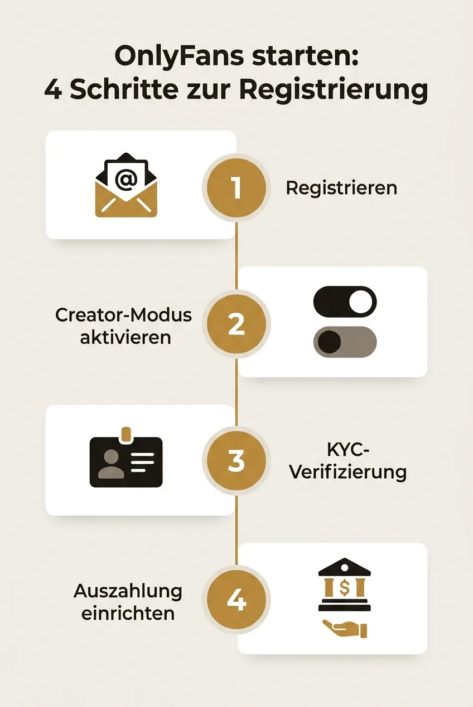
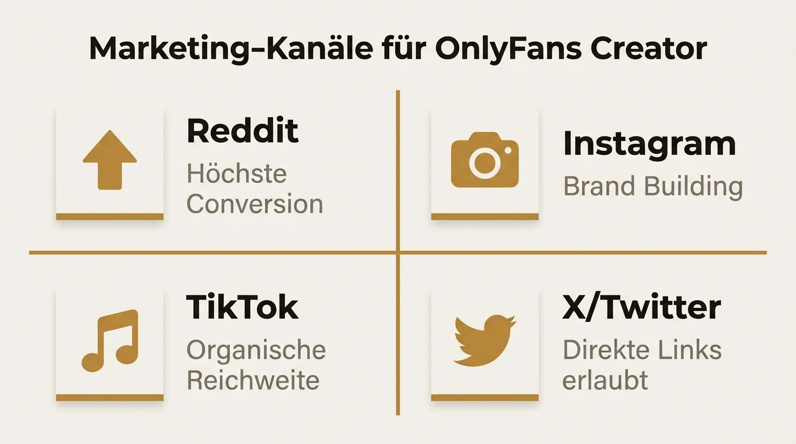

Die meisten Creator scheitern in den ersten drei Monaten auf OnlyFans — nicht an der Plattform, sondern am fehlenden Plan. Dieser Guide zeigt dir Schritt für Schritt den Weg zu den ersten zahlenden Fans.

OnlyFans starten: Schritt-für-Schritt Anleitung für Creator in Deutschland
Die meisten Creator, die mit OnlyFans anfangen, geben innerhalb der ersten drei Monate wieder auf. Nicht, weil die Plattform nicht funktioniert — sondern weil sie ohne Plan starten. Kein durchdachtes Profil, keine Content-Strategie, kein Marketing. Dieser Guide zeigt dir Schritt für Schritt, wie du OnlyFans starten kannst — von der Registrierung über die Profiloptimierung bis zu deinen ersten zahlenden Fans. Alles, was du als Creator in Deutschland wissen musst, an einem Ort.

Voraussetzungen: Was du brauchst, bevor du loslegst
Bevor du deinen OnlyFans Account erstellen kannst, solltest du ein paar grundlegende Dinge klären.
Alter und Identität
Du musst mindestens 18 Jahre alt sein. OnlyFans verlangt eine Identitätsprüfung (KYC — Know Your Customer), bei der du einen gültigen Personalausweis oder Reisepass vorlegen musst. Ohne verifizierte Identität kannst du nicht als Creator aktiv werden.
Mindset
OnlyFans ist kein passives Einkommen. Es ist ein Business, das tägliche Arbeit erfordert — Content erstellen, mit Fans interagieren, Marketing betreiben. Wer nur mal schnell Geld verdienen will, wird enttäuscht. Wer bereit ist, es wie eine Selbstständigkeit zu behandeln, hat gute Chancen.
Equipment für den Start
Für den Anfang reicht ein aktuelles Smartphone mit guter Kamera. Zusätzlich hilfreich:
- Ringlicht oder Softbox — für gleichmäßige Ausleuchtung (ab ca. 25 Euro)
- Stativ oder Handyhalterung — für stabile Aufnahmen
- Neutraler Hintergrund — ein aufgeräumter, ästhetischer Raum reicht
- Bildbearbeitungs-App — Lightroom Mobile oder Snapseed (kostenlos)
Teure Kameraausrüstung ist am Anfang nicht nötig. Qualität schlägt Quantität, aber Perfektion sollte dich nicht vom Starten abhalten.
Gewerbe und Steuern
Ein oft übersehener Punkt: Als OnlyFans Creator in Deutschland brauchst du ein angemeldetes Gewerbe. Die Einnahmen sind steuerpflichtig, und seit DAC7 meldet die Plattform deine Umsätze automatisch ans Finanzamt. Alles Wichtige findest du in unserem ausführlichen Guide zu OnlyFans Steuern und Gewerbe.
OnlyFans Account erstellen: Registrierung Schritt für Schritt
Die Anmeldung bei OnlyFans ist unkompliziert, aber die Verifizierung braucht etwas Geduld.
Registrieren
Geh auf onlyfans.com und klicke auf „Sign up“. Du kannst dich mit E-Mail-Adresse und Passwort, Google-Account oder Twitter/X-Account registrieren. Verwende eine E-Mail-Adresse, die du ausschließlich für OnlyFans nutzt — das hält dein privates Postfach sauber und schützt deine Identität.
Creator-Account aktivieren
Nach der Registrierung wechselst du in den Creator-Modus. Dafür gehst du in die Einstellungen und wählst „Become a Creator“ beziehungsweise „Add a bank account“. Ab hier beginnt die Verifizierung.
Identitätsprüfung (KYC)
OnlyFans nutzt einen externen Dienstleister für die Identitätsprüfung. Du brauchst einen gültigen Personalausweis oder Reisepass, ein Selfie mit dem Ausweis neben deinem Gesicht sowie gute Beleuchtung und lesbare Dokumente. Die Prüfung dauert in der Regel 24 bis 72 Stunden.
Auszahlung einrichten
Für die Auszahlung benötigst du ein Bankkonto. OnlyFans zahlt per Banküberweisung aus — trage deine IBAN und die Kontodaten ein. Die Mindestauszahlung liegt bei 20 US-Dollar, die Bearbeitungszeit bei wenigen Werktagen.
Profil optimieren: Dein Schaufenster für potenzielle Fans
Dein Profil ist das Erste, was potenzielle Subscriber sehen. Es entscheidet in Sekunden, ob jemand abonniert oder weiterzieht.
Username
Wähle einen einprägsamen, kurzen Namen, der zu deiner Nische passt. Idealerweise verwendest du denselben Namen auf allen Social-Media-Plattformen. Vermeide lange Zahlenkombinationen oder schwer zu merkende Sonderzeichen.
Profilbild und Banner
- Profilbild: Zeigt dich klar erkennbar, idealerweise dein Gesicht oder ein wiedererkennbares Markenzeichen
- Banner: Nutze den Header-Bereich für ein hochwertiges Bild, das deine Nische und deinen Stil widerspiegelt
Beide Bilder müssen den OnlyFans-Richtlinien entsprechen — explizite Inhalte sind im Profilbild und Banner nicht erlaubt.
Bio
- Wer du bist und was Subscriber erwarten können
- Wie oft du postest (z. B. „Täglich neuer Content“)
- Was dein Profil besonders macht
- Einen Call-to-Action („Abonniere jetzt für…“)
Preisgestaltung
Die Preisstrategie ist eine der wichtigsten Entscheidungen beim OnlyFans starten:
Niedrige Einstiegshürde. Monetarisierung über PPV-Nachrichten und Trinkgelder. Gut für den Aufbau einer großen Fanbasis.
Monatliche Abo-Gebühr. Verlässlichere Einnahmen, aber höhere Hürde für neue Fans. Gut für engagierte Zielgruppen.
Kostenloses Teaser-Profil + bezahltes Profil mit exklusivem Content. Viele erfolgreiche Creator nutzen dieses Modell.
Mehr zu Verdienst- und Preisstrategien findest du in unserem Artikel über OnlyFans Geld verdienen.
Content-Strategie: Was, wie oft und in welcher Form
Ohne Content-Strategie postest du planlos und verlierst Subscriber genauso schnell, wie du sie gewinnst.
Content-Typen
- Feed-Posts: Fotos und Videos, die alle Subscriber sehen — dein tägliches Brot
- PPV-Nachrichten: Exklusiver Content, den du per Direktnachricht gegen Aufpreis verschickst
- Custom Content: Individuelle Aufträge von Fans — oft die lukrativste Einnahmequelle
- Stories: Kurzlebiger Content für einen persönlicheren Einblick
- Livestreams: Für direkten Kontakt mit deiner Community
Posting-Frequenz
Content-Kalender
Plane deinen Content mindestens eine Woche im Voraus. Reserviere feste Tage für Foto- und Video-Shootings und produziere Content auf Vorrat. So vermeidest du Stress und Posting-Lücken. Ein einfaches Spreadsheet oder ein Tool wie Trello reicht dafür aus.
Nische finden: Warum Spezialisierung den Unterschied macht
Der OnlyFans-Markt ist groß und wettbewerbsintensiv. Laut einer Analyse von Influencer Marketing Hub gibt es über 4 Millionen Creator auf der Plattform. Ohne klare Nische gehst du in der Masse unter.
Beliebte Nischen
- Fitness und Lifestyle
- Cosplay und kreative Inszenierungen
- Persönlicher Lifestyle und Behind-the-Scenes
- Kunst und Fotografie
- Bildung und Coaching
Differenzierung
Frag dich: Was unterscheidet mich von anderen Creatorn in dieser Nische? Das kann deine Persönlichkeit sein, ein besonderer Stil, eine bestimmte Ästhetik oder die Art, wie du mit deiner Community interagierst. Authentizität gewinnt langfristig immer gegen austauschbare Massenware.
Marketing und Reichweite: Ohne Sichtbarkeit keine Fans
Du kannst das beste Profil der Welt haben — wenn niemand davon weiß, bringt es dir nichts. Marketing ist kein optionaler Bonus, sondern Pflicht.

Für viele Creator die wichtigste Traffic-Quelle. Suche passende Subreddits und poste regelmäßig Teaser-Content. Lies die Regeln genau — Spam führt zu Bans.
Für den Aufbau einer persönlichen Marke. Stories, Reels und ein ansprechendes Grid zeigen deinen Stil. Direkte OF-Links sind nicht erlaubt — nutze einen Linkbaum-Dienst.
Enormes organisches Reichweiten-Potenzial. Kurze, kreative Videos können viral gehen. Kein expliziter Content, keine direkten Links — Kreativität und Persönlichkeit stehen im Vordergrund.
Die liberalste Plattform für Creator-Marketing. Direkte OF-Links und Teaser-Content möglich. Hashtags und Community-Engagement sind der Schlüssel.
Erste Fans gewinnen: Deine Launch-Strategie
Die ersten 30 Tage entscheiden über deine Motivation und deinen Schwung. Hier ist ein konkreter Plan.
- Produziere 15–20 Posts als Vorrat, bevor du live gehst
- Richte alle Social-Media-Profile ein und verlinke sie
- Erstelle Teaser-Content für Reddit und andere Plattformen
- Zeitlich begrenzte Rabattaktion anbieten (z. B. 50 % auf den ersten Monat)
- Auf allen Social-Media-Kanälen gleichzeitig posten
- In den ersten Tagen besonders aktiv in DMs und Kommentaren sein
- Shoutout-for-Shoutout (SFS): Empfehlungen mit ähnlich großen Creatorn tauschen
- Kostenlose Trials: Probeabos an potenzielle Fans über Social Media verschicken
- Cross-Promotion: Plattformen untereinander verlinken
Typische Anfängerfehler beim OnlyFans starten
Diese Fehler sehen wir bei Venus Manager immer wieder — und sie sind alle vermeidbar.
Kein Gewerbe anmelden
Das ist kein Kavaliersdelikt. Ohne Gewerbeanmeldung und Steuererklärung riskierst du Nachzahlungen und Strafen. Seit DAC7 melden Plattformen wie OnlyFans deine Umsätze direkt an die Steuerbehörden. Unser Steuer-Guide erklärt alles, was du wissen musst.
Kein Marketing betreiben
Das Profil erstellen und auf Fans warten — das funktioniert nicht. OnlyFans hat keine interne Suchfunktion, die dir Reichweite bringt. Ohne aktives Marketing auf externen Plattformen wirst du nicht gefunden.
Falsche Preisgestaltung
Zu teuer am Anfang schreckt ab. Zu günstig zieht die falschen Fans an und entwertet deinen Content. Starte moderat und passe den Preis an, wenn deine Fanbasis wächst.
Unregelmäßiges Posting
Subscriber zahlen für regelmäßigen Content. Wer zwei Wochen nichts postet, verliert Abonnenten. Konsistenz schlägt Perfektion.
DMs ignorieren
Die persönliche Interaktion ist für viele Fans der Hauptgrund für ihr Abo. Wer Nachrichten nicht beantwortet, verschenkt Umsatz und Loyalität. Viele Creator holen sich deshalb Unterstützung durch einen OnlyFans Manager.
Sich mit Top-Creatorn vergleichen
Die erfolgreichsten Creator auf OnlyFans haben oft jahrelange Erfahrung, ein großes Team und bestehende Reichweite. Vergleiche dich mit deinem gestrigen Ich, nicht mit den Top 0,1 Prozent.
Häufig gestellte Fragen
Du willst OnlyFans starten, aber nicht alles alleine machen? Venus Manager unterstützt Creator in Deutschland mit Marketing, Chatting und Wachstumsstrategien — damit du dich auf deinen Content konzentrieren kannst. Erfahre mehr darüber, was ein OnlyFans Manager für dich tun kann.
Bereit, endlich zu starten?
Lass uns gemeinsam deinen individuellen Fahrplan entwickeln — von der ersten Einrichtung bis zu deinen ersten zahlenden Fans.
Kostenloses Erstgespräch buchen